Sim Racing Pedals Build
I used G27 pedals with the Nixim brake mod for many years and although they worked fine I wanted some top mounted GT style pedals to hopefully get a better feeling of immersion so I decided to make my own.
For the main structure, I used 50mm x 50mm and 30mm x 15mm aluminium box section and 10mm stainless steel rod with some fairly sturdy collars to hold it all together. I looked at a few designs online and produced a basic CAD design in Sketchup although I did change a few things during the build:
- Sketchup Pedals Design

The CNC g-code files that I used:
- Box Section Bottom
- Box Section Sides
- Box Section Top
- Box Section Top Brake
- End Section Sides
- End Section Top and Bottom
- Pedal Arm Sides
- Pedal Arm Top
Although I used a CNC machine for some of the parts, as aluminium is very soft they could easily have been cut and drilled by hand with a basic power drill and a hacksaw.
For the electronics, I used the Leo Bodnar BU0836-LC Load Cell Joystick Controller which has a single load cell interface and multiple inputs for analogue devices (eg. potentiometers and hall sensors) and digital inputs for buttons and switches.
The load cell I used for the brake is a 0-30kg model bought from China which results in a fairly light pedal so I may swap that for a higher rated model in the future. The model I have is a Shenlen SL602 which is wired as:
- WHITE = +5V
- RED = -IN
- YELLOW = +IN
- BLACK = GND
For the clutch and accelerator I initially used A1302 Hall Sensors which are contactless and in theory should maintain a smooth operation over the long-term. However, in use I found the hall sensors didn't stay properly calibrated so I decided to replace them with potentiometers (ALPS 10k RK09711110K) and traditional linkages which is working great so far.
Choosing springs was mostly trial and error. I ended up with:
- Accelerator: 12.5mm (OD) x 80mm x 1mm
- Brake: 27mm (OD) x 83mm x 5mm
- Clutch: 17.5mm (OD) x 90mm x 2.8mm
This is one area where you may need to try different springs to find some that you like.
The pedals are fully adjustable for separation, reach and stroke but as I always left-foot brake in games I spaced them fairly equally although it would be straightforward to set them up for heel-and-toe.
I don't think these pedals have made me any quicker but they do feel a lot more like driving a real car than G27's so are good for improving immersion at least.
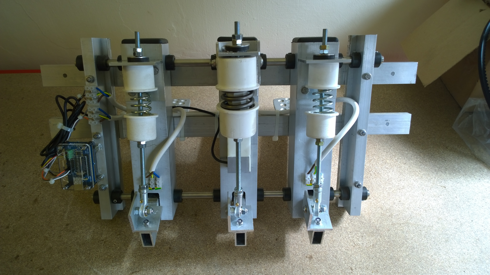
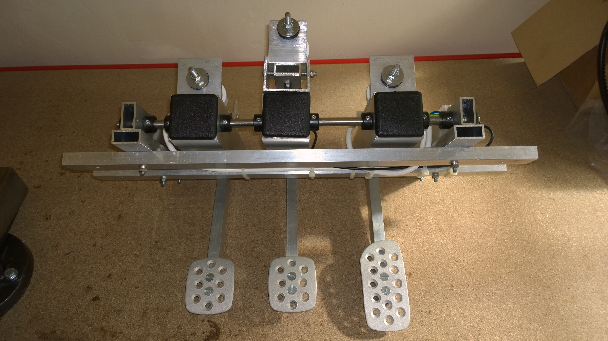
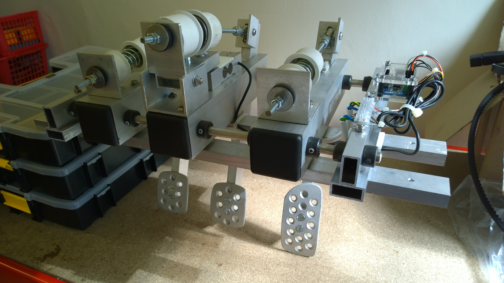
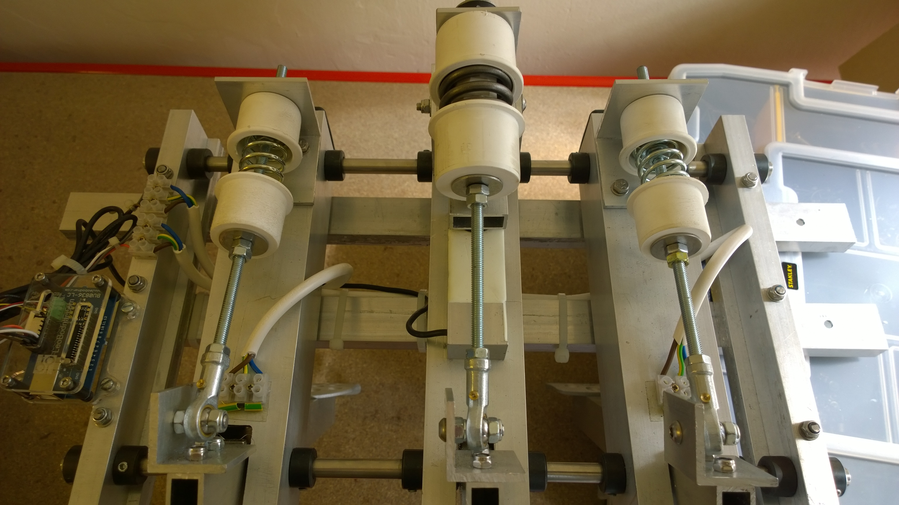
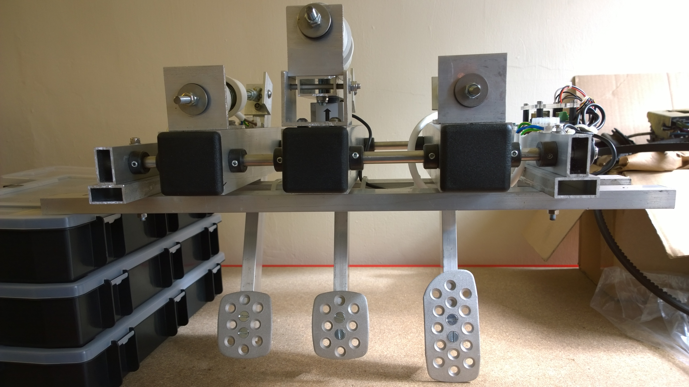
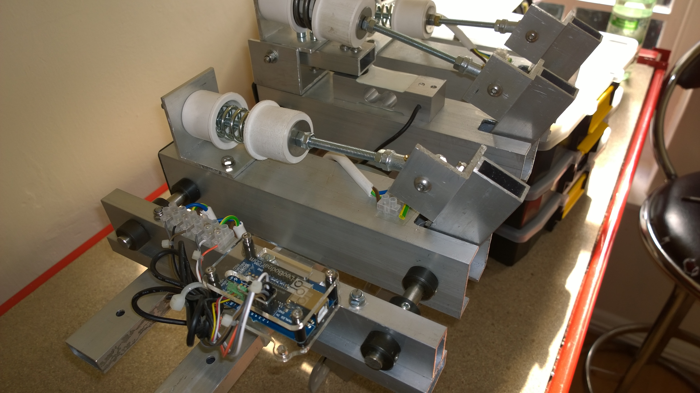
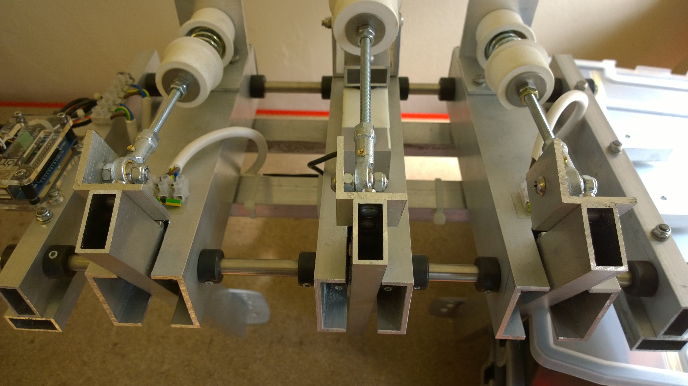
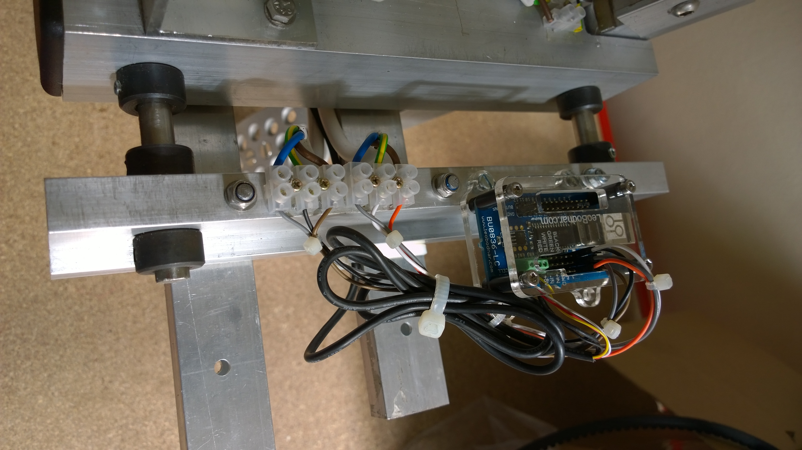
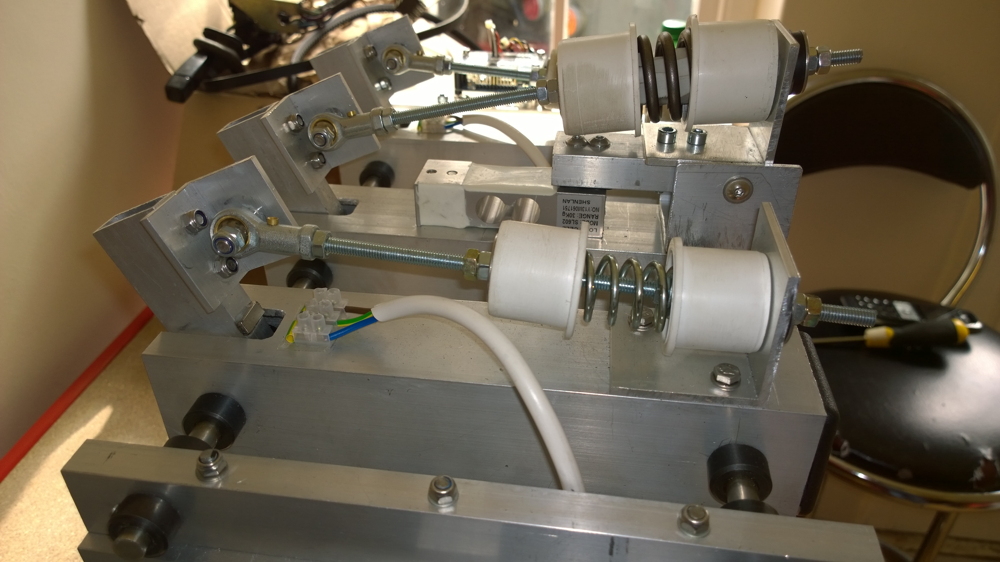
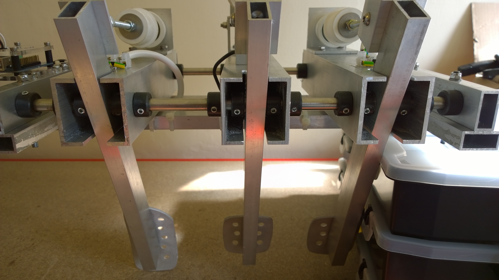
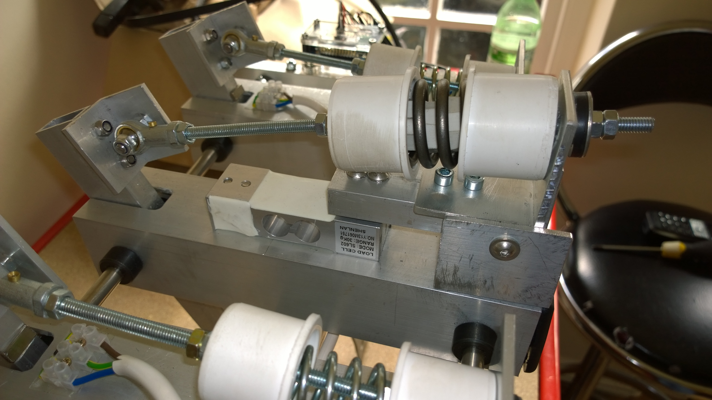
Return to home page.